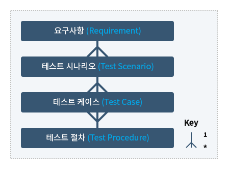

테스트 수행
- 2. 단위 테스트 주요 Task 수행 지침
개요
1. 목적
본 문서는 테스트 가능한 가장 작은 단위(Unit)를 주로 블랙 박스(Black-Box) 기반의 단위 테스트 수행에 필요한 지침을 제공하는데 목적이 있다.
본 문서에 기술된 지침은 테스트 수행자가 테스트 엔지니어 또는 개발엔지니어인지와는 상관없이 적용 가능하며 신규 개발 시스템과 유지보수 단계에 있는 시스템 모두에 적용 가능하다.
2. 적용 범위
본 문서는 단위 테스트 수행 프로세스의 주요 TASK 설명에 중점을 두고 있다.
단위 테스트 수행시 사용될수 있는 테스트 기법은 별도 가이드라인 ‘테스트 케이스 작성 가이드라인’을 참고한다.
3. 단위 테스트 정의
단위 테스트는 구현된 테스트 대상 단위가 사전에 명세된 요구사항(즉 단위와 관련된 기능, 비기능, 기타 모든 요구되는 특성들)을 만족하는지 검증하는 공식적인 테스트 활동이다.
단위 테스트에서는 각 테스트 대상 단위에 대하여 아래 항목과 관련한 결함 또는 문제점을 찾아내며 분석/설계 명세서 내용과 부합하는지(정확성과 완전성)에 대한 검증을 목표로 한다.
- 단위의 기능 특성, 비기능 특성, 상태(States) 특성
- 유효하지 않은 입력값 (Invalid input) 핸들링
- 단위와 관련된 사용자 I/F 또는 운영 절차
- 단위의 알고리즘과 내부 데이터 구조
- 단위 프로그램 제어로직의 분기 흐름
1.1 단위(Unit) 정의
단위 테스트는 사전에 선정된 특정 규모의 단위를 개별적으로 테스트하여 다음 단계에 수행되는 통합 테스트 테스트나 시스템 테스트가 가능하도록 준비하는 활동이다.
따라서 단위 테스트 수행시 가장 먼저 고려되어야 할 사항은 단위를 선정하는 것이다.
단위 테스트에서 단위(Unit)란 테스트가 가능한 가장 작은 부분을 의미한다. 대개 시스템을 구성하는 가장 작은 구성 요소(Basic Building block)를 단위로 선정한다.
절차적 프로그램밍 언어 (Procedural Programming Languages)로 개발된 시스템의 경우, 일반적으로 모듈이나 프로시져를 대부분 테스트 단위로 선정하고 OO 프로그램의 경우는 대부분 클래스를 단위로 선정한다.
그러나 상황에 따라(블랙박스 테스트 또는 화이트 박스 테스트 여부) 여러 모듈의 집합이나 여러 클래스의 집합들이 단위로 선정할 수 있다.
또는 블랙박스 기반의 단위 테스트의 경우 화면을 기준으로 단위를 정의할 수 있다.
즉 테스트 단위는 고정된 개념이라기 보다는 시스템의 특성과 개발 특성에 따라 유연하게 달라질 수 있다.
4. 단위 테스트 전략
단위 테스트는 프로그램 또는 화면 단위를 중심으로 수행하며, 단위 테스트 프레임워크 (Framework) 또는 디버깅 툴 같은 개발 환경의 지원을 필요로 할 수 있다.
단위 테스트 결함은 발견될 때마다 수정하여 결함기록 및 관리가 생략되기도 한다.
그러나 테스트 프로세스 관리 및 개선을 위해서는 단위 테스트 과정에서 발견된 결함에 대한 통계적인 데이터가 필요하기 때문에 필수적으로 결함기록 관리를 수행하여야 한다.
발생한 결함 기록은 "결함관리대장"을 활용할 수 있다.
일반적으로 단위 테스트는 개발자가 직접 자신이 개발한 프로그램을 테스트한다.
적절한 프로세스와 기법을 적용하여 체계적이고 철저히 단위 테스트를 수행한다면 개발자 스스스로 테스트 하는것도 문제될 것이 없지만 자신의 코드를 자신이 테스트 하는 것은 효과성과 객관성 측면에서 한계를 가질 수 있기 때문에 개발자 주도의 단위 테스트에 제 3자에 의한 별도 단위 테스트 수행을 추가하는 것도 좋은 테스트 전략이 될 수 있다.
제 3자에 의한 단위 테스트 꼭 전문적인 테스트 요원을 투입하지 않더라도 여러가지 방법을 활용할 수 있다.
예를 들면 개발자들이 다른 개발자의 테스트 대상 단위에 대한 테스트 케이스를 선정하거나, 개발자들끼리 짝을 이루어 상대방의 프로그램을 테스트 하게 하거나, 아니면 프로젝트 규모나 중요도에 따라 개발프로젝트 팀 내부에 별도 단위 테스트 그룹을 조직하여 수행할 수 있다.
일반적인 단위 테스트의 목적은 다음과 같다.
- 기본적 경로(Path) 확인
- 모든 오류 처리 경로(Error Handling Path) 확인
- 모듈 인터페이스 확인
- 로컬 데이터 확인 및 경계값 확인
단위 테스트 주요 Task 수행 지침
1. 단위 테스트 계획
단위 테스트 목표, 단위 테스트 전략, 단위 테스트 대상, 요구 되는 필요자원, 테스트 조직, 단위 테스트 일정 등을 계획한다.
| 주요 입력물 | Tasks | 산출물 |
|---|---|---|
|
|
|
1.1. 테스트 범위 정의
테스트 계획의 첫번째 단계는 테스트 범위를 정의하는 것이며, 테스트 범위는 어떤 테스트로 무엇을 검증할 것인가에 따라 달라진다.
테스트 계획은 테스트 전략을 바탕으로 수립되어야 한다. 또한 테스트 범위는 기간, 예산, 비즈니스 영역 및 프로젝트 규모에 따르게 정의되어야 한다.
단위 테스트에 의해 커버되어야 할 부분을 식별한다. 필요 시, 식별된 각 부분에서 요구되는 커버리지 정도를 사전에 결정할 수 잇다.
테스트 대상 범위 중에서도 테스트 환경이나 일정 상의 문제로 인해 테스트가 불가능한 부분이 발생할 것으로 예측되면 필수 테스트 영역, 선택 테스트 영역, 테스트 불가 영역을 선정하여 사전에 고객과 협의하고, 테스트 범위를 명확히 한 후 테스트를 실행하도록 한다.
필요시에는 테스트 범위를 기반으로 다음과 같은 테스트 수행 전략을 수립할 수 있다.
- 테스트 우선순위 결정: 중요도나 원활한 테스트 수행을 위하여, 또는 그 밖의 이유로 테스트 순서를 결정할 필요가 있을 때 우선 순위를 정한다.
- 시스템의 성공적인 구축에 핵심적인 (또는 큰 영향을 미치는) 특성
- 구현하기에 복잡하리라 예상되는 특성
- 경험상 결함이 많이 나타나는 것으로 인식된 특성
- 수작업 대 자동화 테스트: 수작업으로 테스트를 해야 하는 경우도 있고 자동화가 필요한 경우도 있을 수 있으므로 수작업과 자동화 테스트에 관한 적절한 전략을 세운다
1.2. 테스트 착수 기준 및 완료 기준 정의
단위 테스트가 수행 가능한 상태인 착수기준과 테스트 활동을 끝마쳐야 할 시기 결정을 위한 완료 기준 또는 종료 규칙을 정의한다.
아래 표는 단위 테스트의 착수 및 완료 기준의 예이다.
| 착수기준(예) | 완료기준(예) |
|---|---|
|
|
※ 제3자 단위 테스트 전담 요원이 투입되거나 개발프로젝트팀 내부의 별도 조직이 단위 테스트를 수행하는 경우에는 이와 관련한 테스트 종료기준이 설정될 필요가 있다.
1.3. 테스트 환경 정의
테스트 환경 정의는 테스트 계획 수립의 중요한 부분이며, 테스트의 성공 여부는 테스트가 수행될 환경에 영향을 받는다. 단위 테스트 경우, 일반적으로는 실제 운영보다는 개발에 가까운 환경에서 테스트를 수행한다.
그러나 특별히 별도 환경이 필요한 경우에는 H/W, 시스템 S/W, 네트워크, DBMS 등의 테스트 환경을 식별한다. 필요하다면 시스템 설치방법, 데이터베이스 셋업, 필요한 스크립트나 프로그램 설치절차 및 활동, 접근권한, 백업절차를 정의한다. 프로젝트 구성관리 계획서에 본 내용이 기술되어 있다면 중복 내용에 대해서는 구성관리 계획서 참조로 대체할 수 있다.
또한 단위 테스트 환경이 실제 운영환경이나 다음 단계의 테스트 환경과 상이할 경우 발생할 수 있는 위험 및 이슈사항을 고려하여 계획을 수립하여야 한다. (단위 테스트 계획서의 ‘단위 테스트 고려사항’에 기술)
테스트 환경 식별시 고려사항
- 테스트 될 시스템이 운영될 환경과 구성은 어느 것인가?
- 테스트가 수행될 플랫폼과 환경은 무엇이며, 이러한 테스트 환경이 실 운영 환경과 얼마나 일치하는가?
- 테스트중인 시스템, 테스트 케이스와 테스트 지원 소프트웨어를 다른 플랫폼 또는 구성 하에서 어떻게 전환할 것인가?
- 테스트에 필요한 다른 지원 시설은 없는가?
- 어떤 테스트 데이터(DB)가 필요한가?
- 테스트 데이터는 어떻게 생성할 것인가?
- 테스트 데이터를 어떻게 유지 관리할 것인가?
테스트 라이브러리/디렉토리 정의
- 테스트를 수행할 떄 필요한 프로그램/데이터 라이브러리 및 디렉토리등의 위치를 정의한다.
테스트 데이터 생성 및 유지절차 정의
- 일반적으로 단위 테스트의 경우 테스트 데이터 생성 및 유지를 담당 개발자 및 테스트 요원이 자체적으로 수행하는 경향이 높다. 개발프로젝트팀 차원에서 테스트 데이터 생성과 유지절차 정의가 필요할 경우, "기능(통합/시스템) 테스트 가이드라인" 및 "통합 테스트 계획서 template"를 참조한다.
1.4. 필요 자원 및 일정 정의
테스트 필요 자원 파악
일반적으로 단위 테스트의 경우, 개발 환경에서 개발자 중심으로 수행한다. 그러나 본 가이드라인 ‘1.4 테스트 전략’에 기술한 바와 같이 제 3자에 의한 단위 테스트 또는 개발프로젝트 팀 내부에 별도의 단위 테스트 그룹을 조직하여 수행하는 경우, 보다 정확한 테스트 필요 자원의 파악이 필요할 수 있다.
필요 자원은 하드웨어, 소프트웨어, 인력으로 구분하여 정의하며, 기존 보유 자원도 기술하여야 한다. (해당 항목의 작성이 필요한 경우, "기능(통합/시스템) 테스트 가이드라인" 및"통합 테스트 계획서 template"를 참조한다.)
- 필요한 H/W및 S/W, 커뮤니케이션 또는 시스템 소프트웨어, 테스트 도구, 테스트 파일, 그리고 기타 여러 가지 필요한 물품 등 식별
- 사전 준비가 필요한 자원(Resource)과 이것을 책임져야 할 사람/그룹 식별
- 필요 자원의 사전 예약
- 단위 테스트 수행과 디버깅을 책임져야 할 그룹을 나누어 식별
- 테스트 수행에 필요한 인력에 관한 요구사항 (예, 스킬, 수, 기간) 식별
※ 준비하는데 상당 시간이 소요되는 것들은 사전에 관련 부서 및 담당자에게 미리 요청하여야 한다.
테스트 일정 수립
- 테스트 일정은 보통 프로젝트 개발일정을 기준으로 하며 테스트 범위의 변경에 맞추어 테스트 일정은 변경된다.
- 작업간의 의존성과 요구되는 제약사항들을 고려하여 단위 테스트를 준비하고 이행하는데 필요한 작업들을 식별하여 기술한다.
(예: 필요한 테스트 자원(Resource), 테스트 대상 단위 가용성 여부 (즉, 테스트 일정 내에 구현이 완료되어 테스트가 가능한지), 필요 자원 준비, 테스트 환경 준비, 기타 제약사항 등을 반영하여 단위 테스트 활동에 대한 상세 일정을 명세 - 작업내용들이 기술되고 이러한 작업의 선행작업과 작업을 담당할 책임자, 시간 완료일 등을 파악하도록 한다.
1.5. 테스트 계획서 작성
앞선 TASK에서 결정된 사항들을 기반으로 단위 테스트 계획서를 작성한다.
단위 테스트 계획서에는 아래 항목들이 포함된다.
- 딘위 테스트 목표
- 단위 테스트 대상 범위
- 단위 테스트 착수 및 완료기준
- 단위 테스트 환경
- 단위 테스트 수행 조직 및 역할
- 단위 테스트 산출물
- 단위 테스트 고려사항(위험, 이슈 등) 식별
2. 단위 테스트 설계
| 주요 입력물 | Tasks | 산출물 |
|---|---|---|
|
|
|
1.1. 테스트 케이스(Test Case) 식별
단위 테스트 대상 범위 및 테스트 요소를 고려하여 프로그램 사양서 또는 화면 설계서 등에 명시 또는 암묵적으로 만족해야 하는 조건을 기반으로 테스트 케이스를 식별하고 케이스 명세서에 개략 설계한다.
단위 테스트 단계에서 검증되어야 하는 사용성, 유지보수성 등의 비기능적인 요구사항 테스트 방안으로 공통 점검항목을 도출한다. 공통 점검항목에 대한 명세는 별도로 작성하여 테스트 수행 담당자에게 배포하여 테스트 수행시 활용하도록 한다.
기존 사용중인 테스트 케이스 중 적절한 것이 있다면 선택하여 재 사용
단위 테스트 케이스 식별 번호(ID) 부여 체계를 결정하여 단위 테스트 케이스 명세서 “테스트 케이스 ID” 컬럼에 기재하도록 한다. 다음은 단위 화면을 구분으로 단위 테스트를 진행하는 경우의 예이다.
<단위 케이스 ID 부여방법 예시>
| 테스트 단계 식별자(Unit Test 약어) | 구분자 | 화면ID | 구분자 | 순차번호 |
| UT | - | ABB_00_001 | - | 001 |
상세한 단위 테스트 케이스 식별은 "테스트 케이스 작성 가이드라인"을 참고한다
1.2. 테스트 스텝(Test Step) 및 검증 포인트(Verification Point) 정의
테스트 케이스를 수행하는 절차를 명세. 테스트 절차는 하나의 테스트 케이스를 실행하는 일련의 과정(Steps)으로 테스트 케이스를 실행하기 위한 사전 준비(set up), 실행 과정, 결과 분석 과정 등의 모든 단계를 상세하게 순서대로 기술한 것이다.
기존의 테스트 케이스가 있을 경우, 일부 Step을 추가/삭제/변경해서 사용
단위 테스트 케이스 명세서의 ‘비고’ 컬럼 등에 필요한 추가 절차를 명세할 수 있다.
테스트 스텝 및 검증 포인트, 테스트 케이스 속성등의 명세(Specification) 수준은 단위 테스트 수행 주체 및 테스트 관리정도에 따라 유연하게 변경될 수 있다.
단위 테스트 수행 주체가 테스트 대상 프로그램을 작성한 개발자인 경우, 상세히 테스트 케이스 명세하지 않고도 어떻게 테스트를 수행해야 하는지 직관적으로 알 수 있다.
그러나 테스트 절차가 매우 복잡, 외부의 제3자의 테스트 수행 또는 개발프로젝트팀내의 별도 조직에서 테스트를 하는 경우 그리고 일관성 있는 테스트 결과를 얻기 위해서는 적절한 수준으로 테스트 절차(Step)등이 문서화되어야 한다.
1.3. 테스트 케이스 속성 정의
새로운 테스트 케이스를 명세. 필요하면 기존 명세서 참조
환경적 요구사항 설정: 테스트 케이스 실행에 필요한 시스템 소프트웨어, 어플리케이션 소프트웨어와 요구되는 하드웨어 특징과 구성을 명세화하고 해당 테스트 케이스 실행보다 선행되어야 하는 테스트 케이스 식별자 나열
테스트 케이스 실행 절차의 특수한 제약사항이나 환경적 요구사항을 기술
단위 테스트 케이스 명세서 ‘비고’컬럼에 기록하거나 별도의 문서에 기록
1.4. 테스트 데이터(Test Data) 준비 및 검증
테스트 데이터 개발은 상위 레벨의 테스트 케이스들을 실행 가능한 형태의 실 데이터로 바꾸는 작업(즉, 테스트 케이스에 따른 실제 입력 데이터를 준비)이다.
생성된 테스트 데이터 역시 문서화 하거나 또는 경우에 따라 테스트 케이스까지만 문서화할 수있다.
- 이전 테스트에서 사용된 기존 테스트 데이터 이용 (변경 없이 또는 변경해서 사용)
- 새로운 테스트 데이터 생성
- 테스트 케이스와 테스트 데이터 Set과의 관계가 명백하지 않을 때 Correlation을 기록하기 위한 테이블을 개발하고 단위 테스트 케이스 명세서에 별도로 포함
- 자동화 된 테스트를 수행하는 경우, 테스트 케이스를 자동화 하는 작업 수행
1.5. 단위 테스트 케이스 개발시 고려사항
단위 테스트 케이스 개발 기법
특정 기법 적용 없이 무작위로 단위 테스트 케이스를 도출하는 방식은 테스트 케이스의 품질 및 커버리지 산정에 문제가 있을 수 있으므로 부분적으로라도 체계적인 테스트 기법을 적용, 테스트 케이스를 생성하는 것이 바람직하다.
단위 테스트 케이스 도출은 Black-Box 와 White-Box 기법 모두 적용 가능하지만, 테스트 대상의 규모가 커짐에 따라 일반적으로 Black-Box 기법이 더 많이 적용된다.
또한, 필요시 다음의 사항들을 고려하여 테스트 케이스 개발을 추진할 수 있다.
- 테스트 케이스 도출 기법
- 여러 테스트 기법 중 어떤 기법을 사용하여 테스트 케이스를 도출할 것인지 정의.
기법 선정은 현 프로젝트의 시스템 특성, 테스트 요구사항 특성, 테스트 목표, 제약사항, 테스트 기간, 현재 지원 가능한 기법인지 등을
고려하여 적용 가능한 최상의 기법을 선택 한다.
(예를 들어 프로젝트에서 테스트 커버리지가 중요한 경우 화이트박스 기법 중 하나를 선택). 대개 하나 이상의 기법을 혼합하여 사용하는 것이 효과적이다.
- 여러 테스트 기법 중 어떤 기법을 사용하여 테스트 케이스를 도출할 것인지 정의.
기법 선정은 현 프로젝트의 시스템 특성, 테스트 요구사항 특성, 테스트 목표, 제약사항, 테스트 기간, 현재 지원 가능한 기법인지 등을
고려하여 적용 가능한 최상의 기법을 선택 한다.
- 생성할 테스트 케이스의 수
- 테스트 기법, 단위의 크기, 시스템의 중요도, 테스트 기간 등을 고려해 생성할 테스트 케이스의 수를 정한다.
(예, “적용한 테스트 기법이 제시하는 수만큼 테스트 케이스를 생성한다” 또는 “각 요구사항 항목에 대해 5개 이상 테스트 케이스를 도출한다”).
- 테스트 기법, 단위의 크기, 시스템의 중요도, 테스트 기간 등을 고려해 생성할 테스트 케이스의 수를 정한다.
- 테스트 케이스(데이터) 처리 방안
- 테스트 케이스가 프라이버시/보안과 관련된 민감한 데이터인 경우 데이터 처리 전략을 명시한다.
(예, “프라이버시를 보장하기 위해, 실 운영 파일들로부터 도출된 모든 테스트 데이터는 테스트 후 모두 삭제”)
- 테스트 케이스가 프라이버시/보안과 관련된 민감한 데이터인 경우 데이터 처리 전략을 명시한다.
- 테스트 케이스 구현 계획
- 예: 테스트 케이스 자동화 계획 수립
도출할 테스트 케이스 수 계획의 예
- 기능점수(Function Point) 당 2-3개의 테스트 케이스
- 기능 요구사항 또는 명세서 문서 페이지당 20-30개의 테스트케이스
- 조회당 2-3개
- 조회당 10-15개 (복잡, 위험이 큰 경우)
- 단위 화면별 5-10개 테스트케이스 (간단, 위험 낮은 경우)
- 단위 화면별 10-25개 (복잡, 위험이 큰 경우)
테스트 케이스 개선 및 향상
생성된 단위 테스트케이스를 검토한다.
검토 후 테스트 케이스가 만족스럽지 못하거나 부족하다고 판단될 경우 추가 개발
- 알고리즘과 내부 데이터 구조의 특성들을 고려하여 테스트 케이스를 향상
- 고객요구 정의서(명세서), 어플리케이션 설계서(프로그램 사양서)등의 설계 정보를 기반으로 테스트 케이스를 추가/변경하고 기록된 테스트 케이스를 업데이트
- 고객요구사항 추적표를 기반으로 부족하다고 판단될 경우 추가 개발
단위 테스트 케이스 명세서 완성
테스트 케이스 작성시 유의사항
개발자가 자신의 프로그램에 대해 전적으로 테스트 케이스나 테스트 데이터를 준비하는 경우 중요한 결점을 찾아 내지 못할 수도 있으므로 설계자, 다른 개발자 또는 별도의 전담 테스트 조직이 테스트 케이스나 데이터를 준비할 수 있다.
그러나 처음에는 시스템을 설계한 설계자나 프로그램을 작성한 개발자가 작성하는 것이 바람직하다. 테스트 케이스는 적합하고 예상되는 상황뿐 아니라 부적합하고 예상하지 못한 것들도 고려하여 작성하여야 한다.
3. 단위 테스트 실행
작성된 단위 테스트 케이스 및 테스트 데이터를 사용하여 단위테스트를 수행한다.
| 주요 입력물 | Tasks | 산출물 |
|---|---|---|
|
|
|
기본적인 테스트 실행 절차
기본적인 테스트 실행 절차는 자동/수동 실행여부, 플랫폼 유형, 테스트 실행자가 누구든지간에 동일하다. 기본적인 단위 테스트 실행 절차는 다음과 같다.
- 테스트 리포지토리(Repository) 또는 테스트 계획서에서 테스트 대상 케이스 추출
- 해당 케이스와 관련된 의문사항 및 미해결 이슈 해결
- 테스트를 성공적으로 실행하기 위하여 요구되는 초기 조건이 갖추어졌는지 점검. 준비 되지 않았다면 테스트 케이스에 맞는 테스트 환경 준비
- 리포지토리(Repository)/라이브러리에서 테스트 실행에 필요한 데이터 추출
- 테스트 데이터를 입력 후 결과 대기. 가능하다면 테스트 중간 과정과 결과를 관찰
- 테스트 결과 관찰 및 수집
- 테스트 결과 성공/실패 여부 평가
- 테스트 결과를 기록(테스트 케이스 명세서)
- 테스트 케이스와 관련된 특징적인 증상 및 메트릭스 관련 데이터 수집
- 향후, 동일 테스트 케이스 재실행 시의 효과를 제고하기 위해 도움이 될 만한 사항을 기록
- 테스트 결과가 실패인 경우, 디버깅과 사후조치를 위하여 상세한 내용을 (결함관리대장 또는 SR시스템에) 기록
- 다음 테스트 케이스를 반복 실행
1.1 테스트 환경 설정
테스트 실행을 위한 전제사항들을 구축한다.
- 테스트 케이스 명세서에 기술된 테스트 수행시 필요한 테스트 지원 자원 획득
- 경우에 따라 테스트 실행을 위해 추가적으로 요구되는 지원 프로그램(예: 시뮬레이터, DB 확인 SW 등) 구축
- 단위 테스트 대상 프로그램 완정성(테스트할 정도로 완성되었는지)을 확인하고 개발된 프로그램을 개발자 환경에서 테스트 환경으로 반영
- 필요시, 테스트 자동화 도구 준비
1.2 테스트 스위트 실행
- 테스트 스위트(Test Suite) 실행
- 단위 테스트를 수행하면서 발생하는 모든 테스트 사항들을 (테스트 케이스 명세서 상에) 로그(Log)로 기록
- 단위 테스트 계획서 및 케이스 명세서에 기술된 테스트 기준 및 예상결과를 실제 테스트 결과와 비교, 일치하지 않거나 문제가 발생한 경우 해당 사항을 결함관리대장에 기록
단위 테스트 활동 기록(Logging)
각각의 테스트 항목에 대한 단위 테스트 기간동안의 시간대별 테스트 활동을 기록한다.
테스트 주기별, 테스트 케이스 별로 테스트 수행 내역을 기록하고, 테스트 진척상황 모니터링을 위해 활동 기록(Log)을 사용할 수 있다.
일반적인 단위 테스트 활동 기록 대상
- 테스트 수행 일시
- 테스트 항목의 버전과 정의
- 테스트 수행자
- 테스트 결과 평가자
- 테스트 결과
- 테스트 수행 회수
- 예상 결과와의 불일치
- 특이 사항(예, 특정 테스트 케이스의 실행이 불가능한 경우)
- 각 사건이 일어날 때마다 결함관리대장의 결함 식별자를 ‘결함ID’ 컬럼에 기록
결함관리대장 작성
단위 테스트 실행 테스트 항목이 예상결과(Exptected Result) 등과 비교하여 실제 결과와 차이가 발생하는 경우, 그 차이를 해당 결함관리대장에 기록한다.
결함관리대장은 테스트 활동 동안의 사건을 테스트 관리자, 프로젝트관리자 및 개발자 등에게 통보하기 위해 사용된다.
테스트 요원 및 관련자들은 테스트 수행 중 발생한 사건을 결함관리대장이 기록하고 이를 지정된 관리자에게 통보하여야 한다.
통보 받은 관리자는 해당 사건에 대한 우선순위를 부여하여 기술된 문제점을 해결하도록 조치를 취한다.
해당 프로그램의 개발자는 결함관리대장의 문제점을 해결하기 위해 결함관리대장을 분석하여 필요한 소프트웨어 변경과 문제점 원인을 파악한다.
1.3 테스트 실행 결과 분석
- 테스트 케이스 명세서에 기록된 예상 결과를 기반으로 테스트가 통과하였는지, 실패하였는지 결정. 성공/실패/실행불가(PASS/FAIl/NORUN) 결과를 기록
- 테스트 실행 및 결함 조치에 소요된 자원 내역을 기록
- 실패한 테스트 각각에 대해 결함을 분석하고 기록
1.4 테스트 자산(Test Asset) 개선
추가적인 테스트가 필요할 때 그리고 비정상적인 종료 조건이 만족되지 않을 때 아래 단계에 따라 테스트 자산을 보완한다.
- 테스트 대상 단위에 대한 테스트 케이스 추가
- 테스트 절차 명세 변경
- 테스트 데이터 추가
- 추가된 테스트 실행
※ 테스트 결과 보고서에 업데이트 된 내용 추가 또는 변경
1.5 테스트 실행결과 검토 및 승인
단위 테스트 결과가 성공 기준에 만족할 경우 관련자와의 협의를 통해 단위 테스트 완료를 검토하고 승인한다.
만약 성공 기준에 만족하지 않을 경우 협의를 통해 향후 진행 사항을 확인하고 추가 테스트 계획을 수립한다.
4. 단위 테스트 평가
단위 테스트를 수행하면서 기록한 테스트 활동 로그와 테스트 수행 도중 발생된 에러나 문제점에 대해 작성된 결함관리대장을 활용하여 이들을 요약한 결과 보고서를 작성한다.
| 주요 입력물 | Tasks | 산출물 |
|---|---|---|
|
|
|
1.1. 테스트 결과 상세 분석
- 테스트 결과 보고서에 테스트 계획과 테스트 케이스 명세의 불일치 사항들과 그 차이가 발생한 이유를 명세
- 비정상적으로 테스트가 종료된 경우, 테스트에 의해 충분히 커버되지 못한 부분과 그 이유를 분석
- 미처 수정되지 못한 결함과 그 이유를 분석하고 단위 테스트 결과 보고서에 기록
단위 테스트 결과 검토
단위 테스트 케이스 명세서의 활동 기록, 단위 테스트 결함관리대장 등을 검토하여 테스트가 완전하고 적절하게 수행되었는지를 검토한다.
변경사항 기록 및 통합 테스트 접근 방법 평가
테스트 계획 및 케이스 명세서와 비교하여 변경된 테스트 항목과 테스트 문서 등에 관한 사항을 명세화하고 테스트 계획에 명세된 테스트 접근방법이 적당한지에 대해 평가하며, 충분히 테스트 되지 못한 테스트 항목을 기술하고 그 이유에 대해서도 기술한다.
- 테스트 활동 로그를 통해 변경된 테스트 항목과 그로 인해 변경된 테스트 문서에 관한 사항을 "단위 테스트 결과 보고서"에 기록.
- 테스트 결과 충분히 테스트되지 못한 테스트 항목을 추출하고 관련 문서를 참고하여 그 이유를 기술
- 테스트 요구사항이나 설계 단계의 시스템 문서를 근거로 나눈 테스트 항목이나 테스트 기준, 테스트 접근방법 등이 실제 단위 테스트 요구사항을 총족할 수 있었는지 평가
- 적용된 단위 테스트 공통 점검항목이 최소한의 요구사항을 만족하였는지 평가.
테스트 활동 요약
주요 단위 테스트 활동들과 사건을 요약하고 테스트 자원을 소모한 데이터에 대해 요약한다.
- 주요 테스트 활동들에 대해 테스트를 시작한 때부터 테스트 케이스와 데이타를 만드는데 소요된 기간, 테스트를 수행에 소요된 기간, 프로그램을 수정에 소요된 기간, 회귀테스트 수행기간, 테스트 결과 보고서 작성기간, 테스트 종료 때까지를 계획서상에 예측한 기간과 실제 소요된 기간을 비교하여 기술
1.2. 테스트 커버리지 평가
필요할 경우, 단위 테스트 수행에 대한 커버리지 평가를 수행한다.
커버리지 측정(Coverage Measures)은 “테스팅이 얼마나 완전한가” 하는 질문에 대한 답을 제공하려는 것이다.
현실적으로 100% 완전한 테스트가 불가능하기 때문에, 어느 정도 테스트가 수행 되었는지 파악하기 위해 커버리지 측정이 요구된다.
테스트 커버리지는 사전에 정의된 특정 기준(Criteria)을 기반으로 측정하며 일반적으로 요구사항과 코드 기반의 테스트 커버리지 (Requirements-Based & Code-Based test coverage) 측정이 가장 많이 사용된다.
일반적으로 White-Box 기반의 단위 테스트는 코드 기반의 테스트 커버리지를 사용하며 Black-Box 단위 테스트는 요구사항 또는 기능 기반의 테스트 커버리지를 사용한다.
- 단위 테스트 케이스와 고객요구 정의서와의 연관관계를 요구사항 추적(요구사항 추적표 활용)하여 테스트 범위의 충분성/적절성을 판단
테스트 커버리지 유형 예시
- 요구사항 커버리지 (Requirement-Based Test Coverage): 테스트로 요구사항이 어느정도 테스트 되었는지를 측정
- 기능 커버리지 (Function-Based Test Coverage): 기능의 어느 정도 테스트 되었는지 측정
(하나의 요구사항과 관련된 다수의 기능이 존재할 수 있음) - 코드 커버리지(Code-Based Test Coverage): 테스트로 소프트웨어의 어떤 부분이 실행되었고(커버되었고) 어떤 부분이 실행되지 않았는지 측정
(예: 구문(statement) 커버리지, 결정(decision) 커버리지, 조건(condition) 커버리지 등.
체계적인 테스트 활동을 위해 하나 이상의 테스트 커버리지 전략을 세워 테스트를 수행하는 것이 바람직하며, 테스트 평가 단계에서 테스트 실행 정도를 측정하여 해당 테스트 커버리지 기준을 만족했는지 평가할 필요가 있다.
커버리지 기준이 만족되지 못한 경우에 측정된 메트릭은 얼마나 많은 테스트 노력이 더 필요한지, 그렇다면 어느 부분이 더 테스트 될 필요가 있는지등에 대한 정보를 제공한다.
커버리지 측정을 위해 아래와 같은 매트릭스를 작성하는 것도 도움이 된다.
기능/테스트 매트릭스(Function/Test Matrix) 예시
기능의 테스트 여부를 검증하기 위해서 기능과 테스트 케이스와의 관계를 매트릭스로 표현.
| Test Case 1 | Test Case 2 | Test Case 3 | Test Case 4 | |
|---|---|---|---|---|
| Function A | ▲ | ▲ | ||
| Function B | ▲ | ▲ | ||
| Function C | ▲ | |||
| Function D | ▲ | ▲ |
코드 커버리지 측정 방법 (White/Gray-Box 테스트 기법 활용시 적용)
요구사항과 테스트 케이스간의 관계 예

1.3. 결함 분석 및 평가
상세 결함분석 및 평가 방법은 별도 ‘결함관리 가이드라인’ 참조한다.
발생된 결함의 상세 분석 후, 필요 시 관련 담당자(고객, PM, 테스트 담당자, QA 등)와의 협의를 통해 결함 해결을 위한 수행 범위 및 향후 일정을 결정한다.
1.4. 테스트 종료 결정
테스트를 중단해도 되는지 판단하고 테스트 계획서에 정의된 종료기준을 만족시키는지 평가한다.
본 문서의 ‘2.1.2 테스트 착수기준 및 완료기준 정의’ 참조
1.5. 테스트 결과 보고서 작성
분석 결과를 기반으로 테스트 활동 및 테스트 대상 시스템에 대한 전반적인 평가(피드백) 및 권고사항을 기술한다.
- 시스템 품질과 관련하여 좋은 측면과 나쁜 측면에 대해 기술
- 특성상 테스터나 개인의 주관적인 견해도 어느 정도 추가될 수 있지만, 되도록 이면 객관적인 사실에 기반 하여 평가 수행
- 테스트가 적절하게 되지 못한 부분이나 두드러지는 품질 위험 요인을 기술
- 가장 시급하게 해결되어야 할 문제들, 추가적인 테스트 노력이 필요한 부분 등을 식별하고 기술
- 앞 단계의 분석 내용을 바탕으로 테스트 결과 보고서 작성.
- 테스트 평가 단계에서 작성되는 테스트 결과 보고서는 테스트 결과를 테스트 활동, 테스트 커버리지, 결함 분석을 포함한다.
테스트 결과 보고서는 품질과 테스트 상태에 대해 객관적인 평가를 내리고 모든 이해관계자와 의사소통 하는 수단으로 사용하기 위하여 작성된다.
경우에 따라 여러 관계자를 위한 문서를 만들 수 있는데 대상이 누구냐에 따라 양식(Format)과 요약 보고의 내용이 달라 질 수 있다.
테스트 결과(요약) 보고서에는 일반적으로 아래와 같은 항목들이 기술된다.
- 테스트 수행 시 어려움, 테스트 일정 지연 요인
- 테스트 계확과의 불일치사항 발생시, 원인
- 실제 테스트 수행 범위
- 테스트 결과에 따른 평가
- 테스트 목표, 확인기준, 위험 분석에 따른 테스트 항목의 평가
- 테스트 계획서에 정의된 위험이 문제로 발생한 내용
1.6. 테스트 결과 보고서 검토∙승인
단위 테스트 결과 보고서에 대해 관련있는 승인권자의 승인을 획득. 예를 들면 프로젝트 관리자나 품질보증 담당자 등이 될 수 있으며 그외 책임을 맡은 승인권자가 해당됨
top